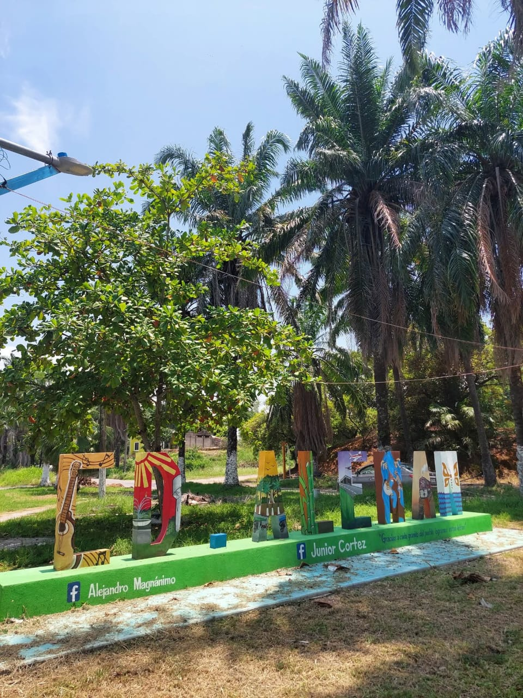

0

En esta pagina conocerán sobre Ciudad Alemán, para ello se dividirá en 3 secciones con la finalidad que pueda conocer su historia, lugares pocos conocidos,negocios de interés, al igual que resolver dudas sobre el lugar.
Ciudad Alemán es una localidad del municipio de Cosamaloapan, en el estado de Veracruz, hoy destaca por su actividad agropecuaria.
Ciudad Alemán tiene un papel fundamental en la historia de la Cuenca de Papaloapan.En 1947, por decreto presindecial se creo la Comisión de Papaloapan (CODELPA), una iniciativa clave que impulso el desarrollo agrícola, social y economíco de la región. Gracias a la labor de CODELPA, se construyeron escuelas,carretas,etc.
Las 3 secciones en la que se dividen: